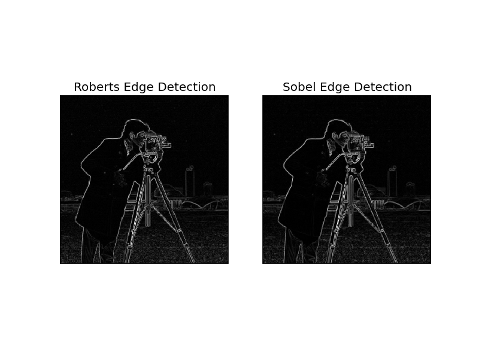

Edge operators are used in image processing within edge detection algorithms. They are discrete differentiation operators, computing an approximation of the gradient of the image intensity function.
import matplotlib.pyplot as plt
from skimage.data import camera
from skimage.filter import roberts, sobel
image = camera()
edge_roberts = roberts(image)
edge_sobel = sobel(image)
fig, (ax0, ax1) = plt.subplots(ncols=2)
ax0.imshow(edge_roberts, cmap=plt.cm.gray)
ax0.set_title('Roberts Edge Detection')
ax0.axis('off')
ax1.imshow(edge_sobel, cmap=plt.cm.gray)
ax1.set_title('Sobel Edge Detection')
ax1.axis('off')
plt.show()
Python source code: download (generated using skimage 0.9.0)